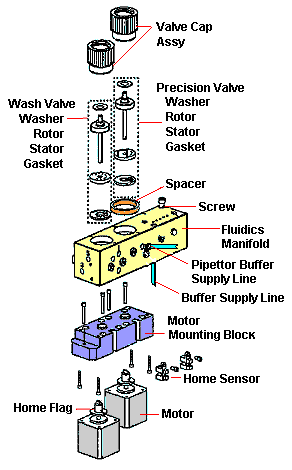

Replacing Valve Motor (Wash/Precision)

-
Remove the valve motor.
-
Install the valve motor.
-
Verify the wash pump operation.
- Complete one main pipettor priming cycle and one wash pump prime cycle, confirming that all the air is removed from the wash and precision pumps and the fluidics manifold.
-
Verify system operation.